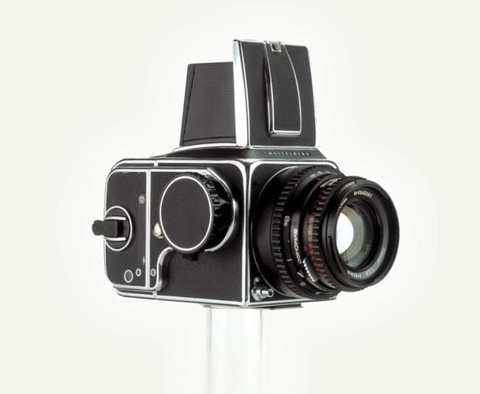

哈苏 500C/M

6×6 模块化中画幅系统，登月同门的传奇。
客观评测
哈苏 500C/M 是 1974 年推出的 6×6 模块化中画幅系统：机身、镜头、胶片后背与取景器均可更换。标配蔡司 Planar 80mm f/2.8 镜头，镜间叶片快门 1 至 1/500 秒并支持全速闪光同步。机身无测光、无自动功能，腰平取景器放大率约 0.6 倍，对焦需俯视完成。金属件配合严丝合缝，成像细节与灰阶层次在中画幅胶片中数一数二，阿波罗任务亦使用其同门机型。
主观点评
500C/M 是摄影史上最具辨识度的系统之一：掀开腰平取景器，低头看见一块明亮的 6×6 画幅，构图因此变得郑重。快门声轻巧利落，镜间快门全速同步让影棚布光异常方便。它慢、重、贵，模块组合还需要些知识，但这种纯粹的机械秩序感让人着迷。从先驱摄影师到无数影楼，它用半个世纪证明了系统设计的生命力。
优点与不足
- 模块化系统灵活，后背可多卷切换
- 蔡司镜间快门全速闪光同步
- 6×6 成像细腻，半个世纪的系统生命力
- 无测光无自动化，流程繁琐
- 整机笨重，对焦与过片全靠手动
参数规格
| 类型 | 6×6 模块化中画幅单反 |
|---|---|
| 画幅 | 约 56×56 毫米（120 胶片） |
| 胶片 | 120/220 胶卷，一卷约 12 张 |
| 镜头 | 哈苏 V 卡口，标配蔡司 Planar 80mm f/2.8 |
| 快门 | 镜间叶片快门，1-1/500 秒及 B 门 |
| 测光 | 机身无测光，需外置测光表 |
| 对焦 | 手动对焦（皮腔折叠机身） |
| 取景 | 可换腰平取景器，可选眼平棱镜 |
| 连拍 | 无，手动过片 |
| 闪光 | 镜间快门全速同步 |
| 模块化 | 机身、镜头、后背、取景器均可更换 |
| 重量 | 约 1400 克起（视配置） |